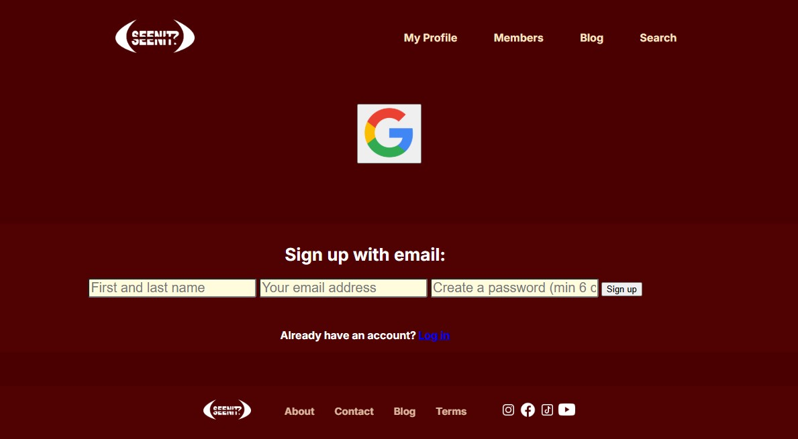

SeenIt

About This Project
This platform was designed and developed as part of a university course. The website offers the possibility to search movie/tv series and actors. Ratings together with a short description are avaiable. The database was implemented with TMDB API and the login system is supported woth Firebase.
The project as a further goal to implement a review system and a working community.
Key Features
- Responsive design that works on all devices
- Custom movie/actor/tv serie filtering and search
- Integrated sign up and login